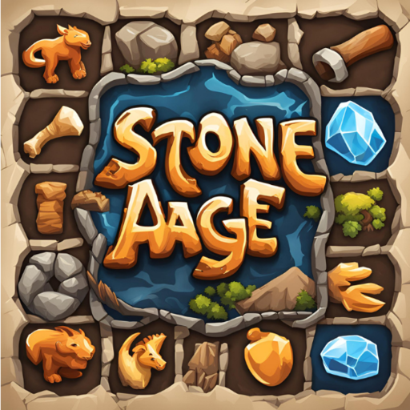

Stone Age
Proje Açıklaması
Stone Age, Taş Devri temalı bir tuğla kırma oyunudur. Oyunculara nostaljik bir oynanış sunarken, günümüz grafik ve animasyonlarıyla modern bir deneyim de yaşatır. Efsane klasiklerin havasını taşıyan bu oyun, taş bloklar, sopa animasyonları ve dönemin estetiğini yansıtan sahneleriyle hem retro severleri hem de yeni oyuncuları hedefler.
Öne Çıkan Özellikler
- 🧱 Klasik tuğla kırma mekaniklerine sadık oynanış
- 🌋 Taş Devri temalı eşsiz grafikler ve animasyonlar
- 🎮 Farklı zorluk seviyeleri ve bölümler
- ✨ Power-up ve bonuslar ile zenginleşen oyun deneyimi
- 📱 Mobil uyumlu kontroller ve sade arayüz
Kullanılan Teknolojiler
- Unity: 2D oyun geliştirme motoru
- C#: Oyun içi mantık ve etkileşimlerin yazımı
- Android Studio: Oyun APK derleme ve test süreci
Görseller
🖼️ Oyun içi sahnelerden bazıları aşağıda:


Geliştirici Notları
Bu proje sayesinde Unity motoruna hakimiyetimi geliştirdim ve mobil uyumlu oyun mekaniklerini optimize etmeyi öğrendim. Animasyon yönetimi, seviye sistemi kurulumu ve oyun içi ses efektlerinin entegresi gibi birçok alanda deneyim kazandım. Oyun, Google Play Store'da yayınlandıktan sonra kullanıcı geri bildirimlerine göre düzenli güncellemelerle geliştirilmeye devam etmektedir.